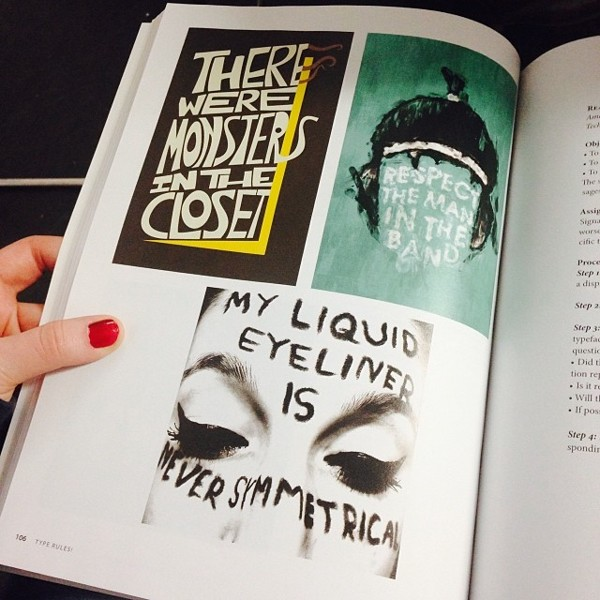

This project was inspired by Smith Magazine who challenged readers to write their memoirs in six words or less.
I took a personal story and put it in six words to explore and interpret typographic form to express meaning.

This peice was recently published in the 4th edition of 'Type Rules' by Ilene Strivzer and published by John Wiley & Sons. Published on November 4, 2013.